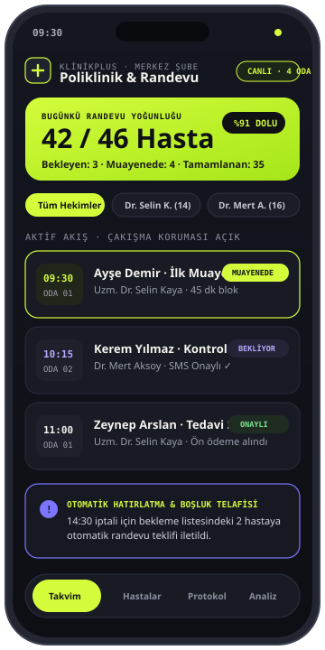
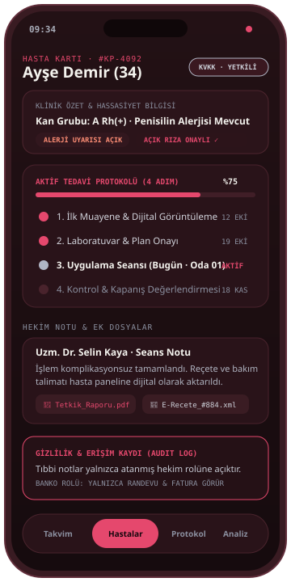
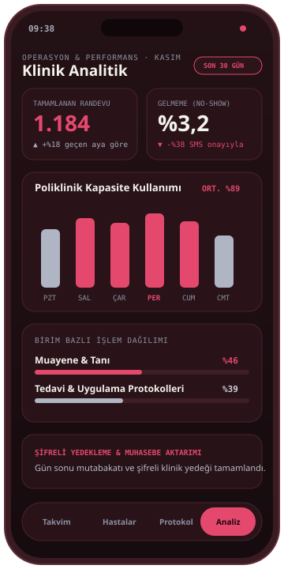

EKRAN 01 · RANDEVU MOTORU
Hekim & oda bazlı takvim
Çakışma korumalı randevu blokları, bekleme odası durumu ve iptal edilen saatler için otomatik yedek liste teklifi.

Poliklinikler, özel muayenehaneler ve sağlık merkezleri için hekim randevularını, hasta kartlarını, çok adımlı tedavi protokollerini ve operasyonel raporlamayı rol bazlı güvenlik mimarisiyle tek platformda toplar.


Telefonla alınan randevuların çakışması, muayene odasında geçmiş tetkiklerin aranması ve banko ile hekim ekranlarının birbirinden kopuk çalışması kliniklerde ciddi zaman kaybı yaratır. KlinikPlus, hasta kabulden tedavi kapanışına kadar her adımı yetki sınırları içinde senkronize eder.
Aşağıdaki ekranlar KlinikPlus’ın hekim, banko ve yönetici rollerine göre ayrıştırılmış çalışma akışını örnek verilerle gösterir.
Çakışma korumalı randevu blokları, bekleme odası durumu ve iptal edilen saatler için otomatik yedek liste teklifi.
Alerji/hassasiyet uyarıları, çok seanslı tedavi ilerlemesi, tetkik ekleri ve KVKK uyumlu rol bazlı görünürlük.

Haftalık poliklinik kapasite kullanımı, SMS onayıyla düşen gelmeme (no-show) oranları ve şifreli gün sonu yedeği.
Görsellerdeki hasta isimleri, randevu saatleri ve metrikler tanıtım amacıyla kurgulanmış sentetik örnek verilerdir.
KlinikPlus, sağlık kuruluşlarının günlük yoğunluğunda hız ve veri güvenliğini birlikte koruyacak şekilde kurgulandı.
Hekim, cihaz ve muayene odası bazlı planlama; SMS/WhatsApp randevu doğrulaması ve iptal boşluklarını hızlı doldurma akışı.
Geçmiş muayeneler, açık rıza durumu, alerji uyarıları ve çok adımlı tedavi planlarının tek zaman çizelgesinde izlenmesi.
Banko/kabul personeli yalnızca randevu ve fatura ekranlarını görürken; tıbbi notlar ve tetkikler yalnızca yetkili hekim rolüne açılır.
Hekim ve birim bazlı işlem dağılımı, randevu gerçekleşme oranları ve düzenli şifreli veri yedekleme mimarisi.
KlinikPlus, kliniğin branş yapısına ve oda sayısına göre özelleştirilerek kurulur.
Poliklinik takvimi, hasta kabul akışı, seans/protokol takibi ve denetim kayıtları (audit log) altyapısı.
Randevu öncesi SMS/WhatsApp onay bağlantıları ve tablet üzerinden dijital aydınlatılmış onam imzalama.
Birden fazla şubesi olan klinikler için merkezi kapasite kıyaslaması ve ön muhasebe entegrasyonları.
KlinikPlus’ın örnek ekranlarını canlı görmek veya kliniğinin iş akışına uygun kurulum kapsamını konuşmak için bize ulaşabilirsin.